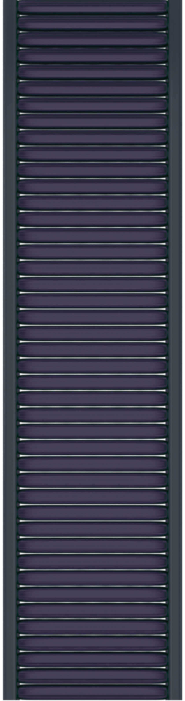
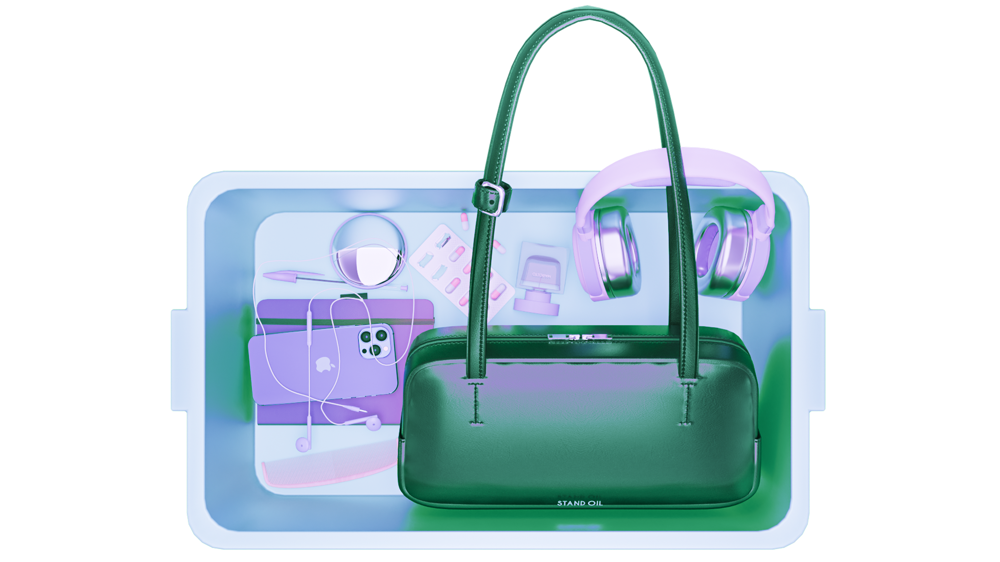
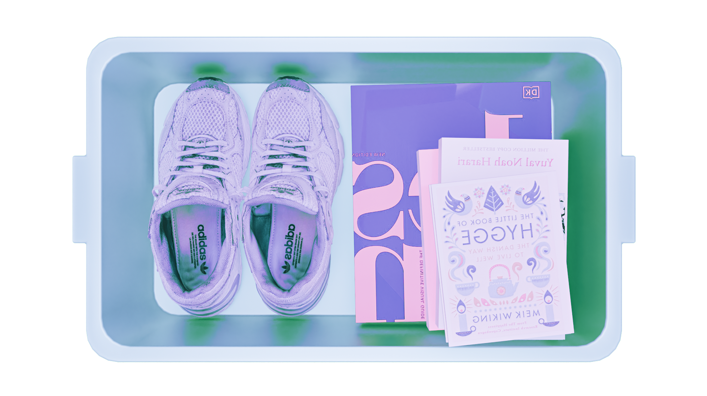

PERSONAL INFORMATION
Hi, I'm bettyj - a 3D environment artist based in Sai Gon, Viet Nam
I’m a Design student at RMIT Vietnam with two years of experience in 3D design and digital art.
I’m a Design student at RMIT Vietnam with two years of experience in 3D design and digital art.

WHAT'S (MUST) IN MY BAG?
Not just things I need, but little pieces of who I am.

skills beyond design
Creativity doesn't stop at the screen. I find inspiration through dancing movement, stories, and words.